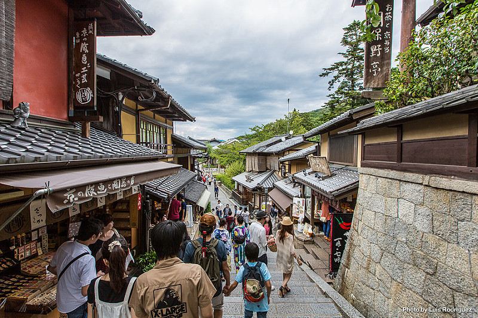

1. Madruga y acércate hasta el templo Fushimi Inari, posiblemente el lugar más impresionante de Kioto. Se trata de una montaña sagrada donde serpentean caminos hechos de miles de toriis rojos. Es un sitio tan peculiar que ha sido el escenario de varias películas, entre ellas Memorias de una Geisha.
2. Pasea a orillas del río Kamo, al norte de Gion. Lo mejor es acercarse al atardecer y si te pilla en verano, disfrutar de una cena en las terrazas que montan los restaurantes en esta época del año.
3. Piérdete por los puestos del mercado Nishiki, y prueba sus especialidades. Aunque vimos algunas demasiado exóticas para nuestros paladares.
4. Alójate en un ryokan tradicional: no hay mejor sitio que Kioto para experimentar este tipo de alojamiento. Y si lo de dormir en un futón te asusta, no te preocupes: es mucho más cómodo de lo que parece.
